D1 9/4 周五
🏨 躺平 D1：抵达即泡泳池。下午 check-in 后室内泳池 24/7是第一站，傍晚转晴走一圈林间步道，晚餐 The Attic 或房内送餐。
1Bellevue 出发 9/4 周五 08:45🌦️ 毛毛雨·15°C·风16·雨35%出发
🛣 285 mi · ≈4.5–5h(含停靠)
出发日。走内陆线：I-5 南下→Salem→OR-18 西行→Lincoln City→Salishan。这条线比海岸线更短、更快、DC 快充更密，且正中有个『吃饭+休息+快充』的中点 Keizer Station。Model Y 可开；建议中点补一次电再走。
亮点：08:45 出发（I-5→Salem→OR-18 内陆线，最短最快） · 🔥 中点 Keizer Station：16桩 V4 快充+Red Robin 儿童餐+厕所 · Model Y：前一晚家中L2 充满，或出发前 Bellevue NE 8th St V4 15分钟
贴士：⚡ 中点补电 20-25min 到 75-80%，一次到位不焦虑 · 给娃带安抚物+小毯子，北上停车松腿 · 到店插 Salishan 目的地 L2(8桩) 过夜，早上满电
🗺 在 Google Maps 打开(Bellevue 出发)2Keizer Station 充电+午餐（中点） 9/4 周五 中午🌦️ 小雨转多云·15°C·雨30%充电
🛣 Bellevue→Keizer ≈200mi·~3h2
中途充电+吃饭+休息的点。I-5 exit 260 的 Keizer Station 购物中心：16 桩 Tesla V4 超充（325kW）就在楼里，补电 20–25 分钟到 75–80%；旁边商场，孩子能跑、能上厕所。餐厅：Red Robin（Keizer Station 内，儿童菜单+涂色纸+无限薯条，约11:00–22:00，周五午餐开门）；怕吵的话 Chipotle/Subway 打包在车里吃。从这里到 Salishan 还有 ≈85mi（经 OR-18），到店约 55–60%。
亮点：⚡ 16桩 Tesla V4 超充(325kW)，补电20-25min到75-80% · 🍔 Red Robin 儿童菜单+涂色纸+无限薯条(娃友好) · 🛒 商场可跑动+上厕所，一次解决充电+吃饭+休息
贴士：带娃到商场上厕所、活动腿脚 · 怕吵就 Chipotle/Subway 打包在车里/长椅吃 · 补满后再走 OR-18 到 Salishan，到店 55-60%
🗺 在 Google Maps 打开(Keizer Station 充电+午餐（中点）)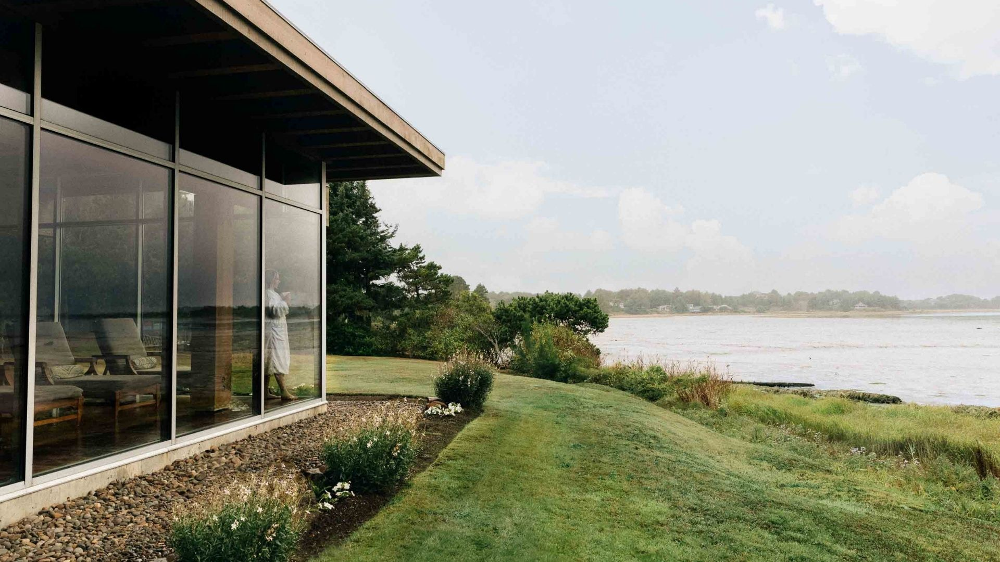
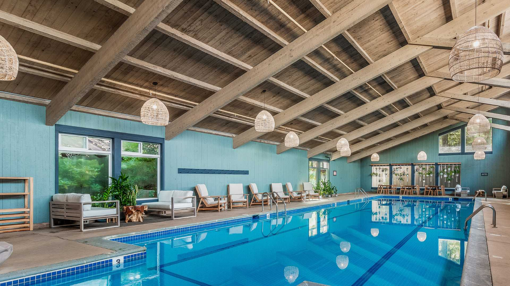
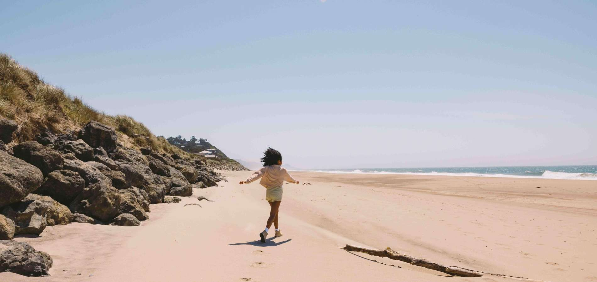
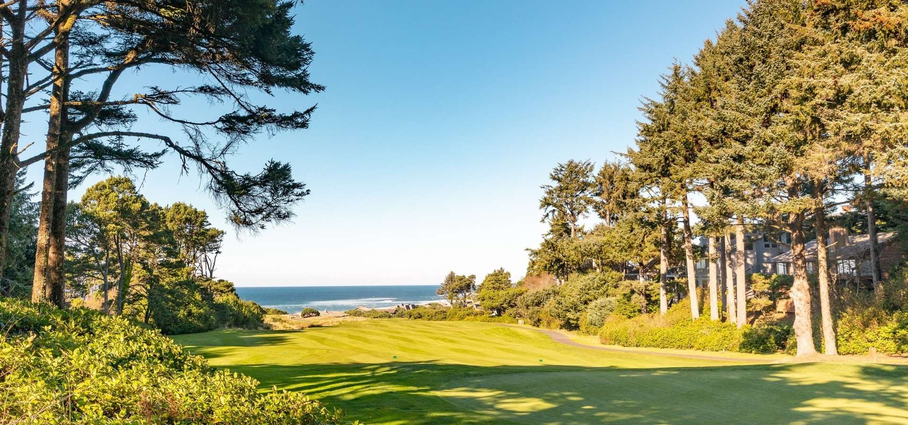
3Salishan Coastal Lodge 抵达+泡泳池 9/4 周五 下午🌥️ 午后转晴·62°F·风9·雨19%必住
🛣 🏠 基地 · 0 mi
Salishan Coastal Lodge（Gleneden Beach，SCP Hotels）—— 车停下就不用再开。室内泳池 24/7、热水缸 7am-10pm，刮风下雨娃都能泡；环线林间步道、免费单车/自行车技能场、草坪游戏+室内桌游室、匹克球+网球中心、高尔夫模拟器、健身房(Peloton)。傍晚天转晴（62°F）可走一圈 0.9-mile 林间步道。
亮点：🏨 室内泳池 24/7 + 热水缸 7am-10pm，全天候包底 · 0.9-mile 环线林间步道，傍晚光线好 · 免费单车/桌游室/匹克球/高尔夫模拟器，全自带 0 开车
贴士：⚠️ Aerial Park 高空滑索需 8岁+60磅，6岁上不了 · 晚餐 The Attic(4-9pm) 或房内送餐($5+20%)，敏感娃最省心
🗺 在 Google Maps 打开(Salishan Coastal Lodge 抵达+泡泳池)D2 9/5 周六
☀️ 躺平 D2（最佳户外日）：上午 Cascade Head 生物圈导览，午后 Lincoln City 玻璃浮标寻宝+Roads End 沙滩，晚归酒店泡泳池。
4Cascade Head 生物圈导览 9/5 周六 10:30☀️ Mostly Sunny·64°F·雨5%备选
🛣 15 mi · ~31 min
Cascade Head 是联合国生物圈保护区，Knight Park(Otis) 的免费自然导览「Cascade Head Biosphere Explorience」，约 90 分钟，讲解海岸生态系统+原生植物+历史。天气配合就去，凉快又涨知识；对敏感娃是结构化、人少的自然课。
亮点：免费 · 90min 自然科普导览 · 生物圈保护区海岸悬崖+原生植物/历史 · 人少安静，适合敏感娃的自然课
贴士：⚠️ 需防水鞋、无狗、有湿滑段 · 娃没兴致可 skip，改 Lincoln City 沙滩
🗺 在 Google Maps 打开(Cascade Head 生物圈导览)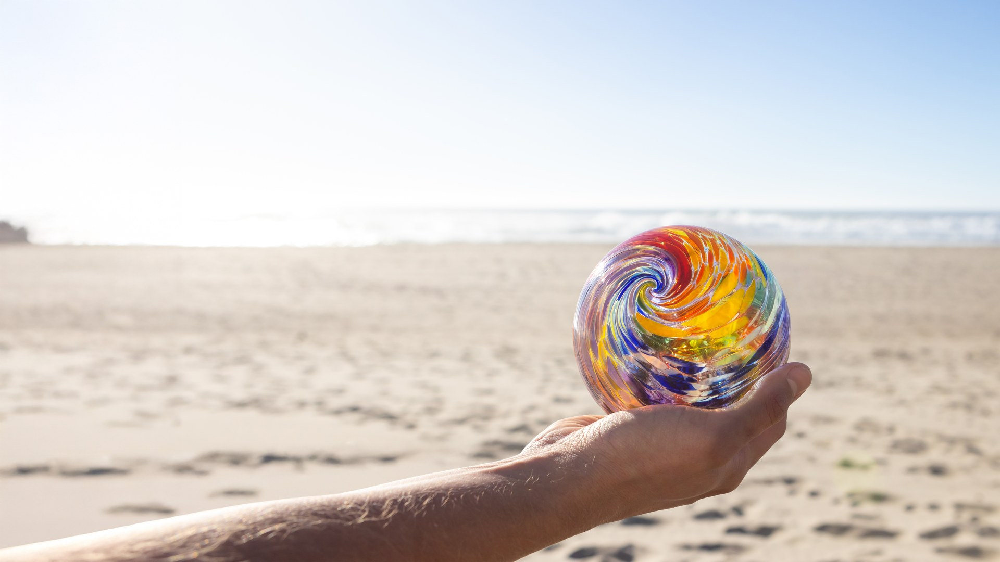
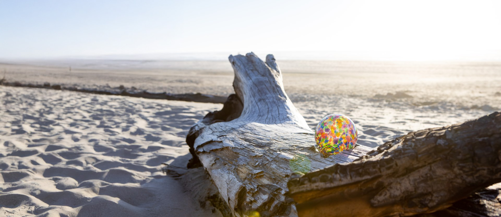
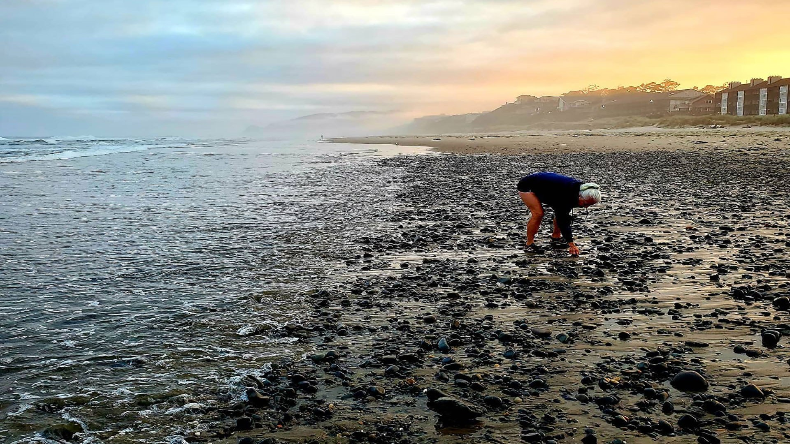
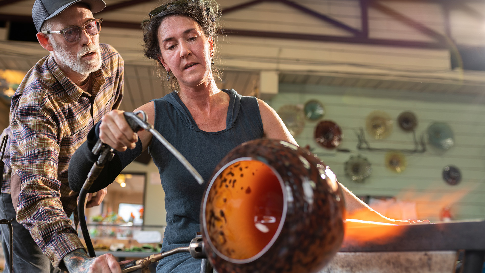
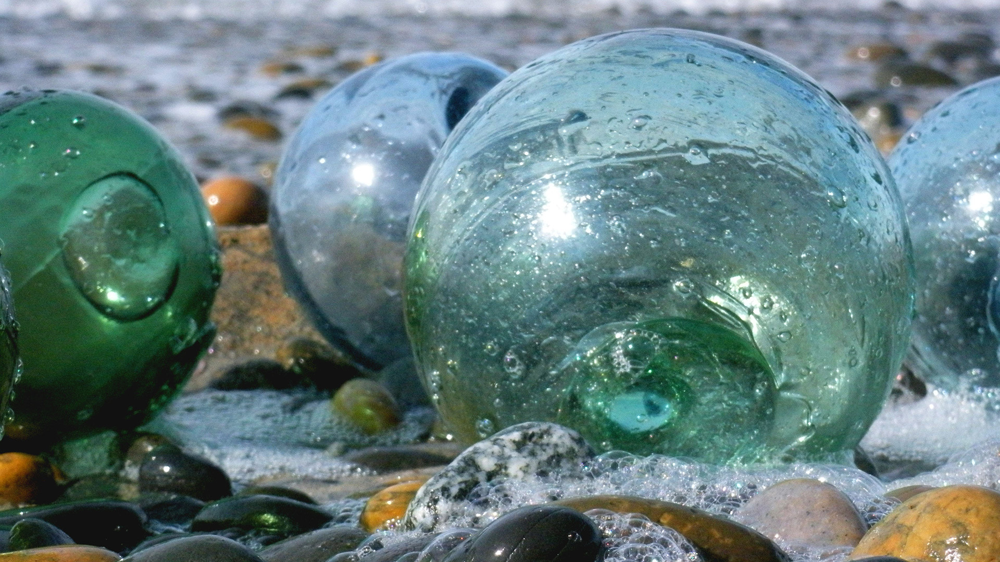
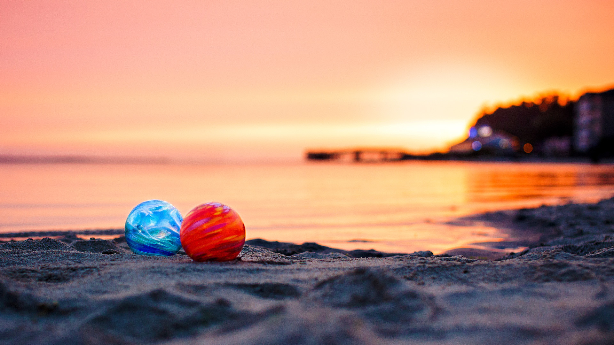
5Lincoln City · 玻璃浮标寻宝 9/5 周六 下午☀️ Mostly Sunny·65°F·雨13%必去
🛣 7 mi · ~14 min
Lincoln City 专属「Finders Keepers」：市里全年把 3000+ 手工玻璃浮标藏在 7 英里海滩各处（高潮线上、崖坡下、沙滩上），捡到就是你的、免费，还能登记领收藏证书。对喜欢结构化小任务的敏感娃是天选游戏。
亮点：全年藏 3000+ 玻璃浮标，找到归你😍 · 白天投放、在高潮线上方，看准潮汐线 · 结构化寻宝，对敏感娃极度友好
贴士：免费；浮标在高潮线以上、沙丘崖坡下，别往水边 · 1 户/年限 1 颗；本周末无特殊 drop 日
🗺 在 Google Maps 打开(Lincoln City · 玻璃浮标寻宝)6Roads End 沙滩 9/5 周六 傍晚🌤️ Partly Sunny·64°F·雨9%备选
🛣 10 mi · ~22 min
Roads End 是 Lincoln City 北端最平坦开阔的沙滩之一，礁石峡谷+海石柱勾勒出安静的海岸线，入口好走、停车方便。娃玩沙、追浪、找贝壳正好；傍晚光线柔和，人比市中心少。
亮点：平坦开阔沙滩，入口好走、停车易 · 礁石峡谷+海石柱，风景如画 · 傍晚人少，适合娃尽情奔跑玩沙
贴士：傍晚退潮后走走更舒服 · 带小桶+铲子+防晒，穿沙滩鞋
🗺 在 Google Maps 打开(Roads End 沙滩)D3 9/6 周日
🐋 躺平 D3（南下串坑）：Boiler Bay 观景台(7min) → Devils Punchbowl(14min) → Yaquina Head 灯塔(27min) → Hatfield 海洋中心(34min)，全在 40min 内串 4 个坑，最晚那站收尾。
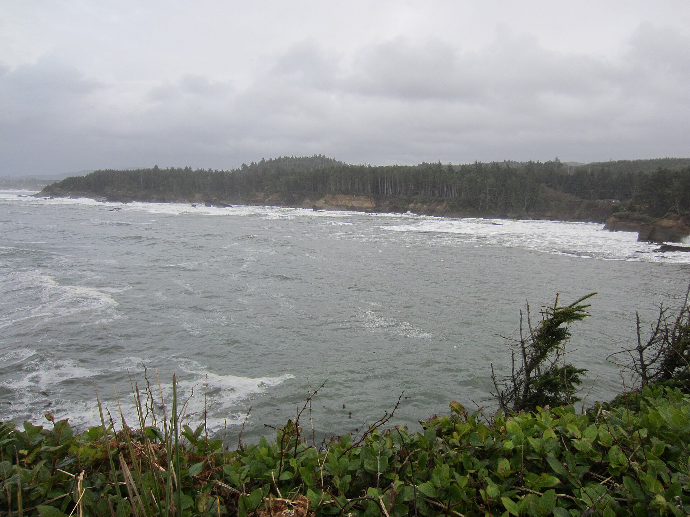
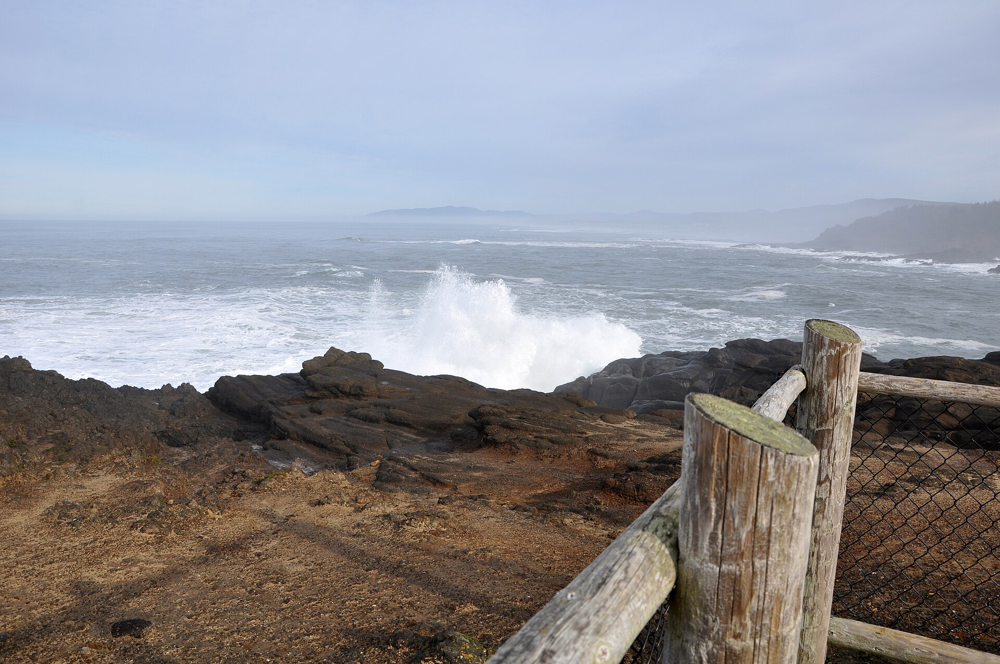
7Boiler Bay 观景台 9/6 周日 上午🌤️ Partly Sunny·64°F·雨11%必去
🛣 5 mi · ~9 min
Boiler Bay 州立景观台——停车靠边人行道就走到观景台，玄武岩礁崖+海浪拍岸，还是全俄州最佳灰鲸观景点（9月定居鲸旺季，每天稳定 5-15 头）。不用进楼、不用排队，溜达 15 分钟就够；安静开阔，对敏感娃极度友好。
亮点：🆓 免费 · 停车即看，无队无楼 · 玄武岩礁崖+海浪，景色壮阔 · 🐋 全俄州最佳灰鲸观景点（9月旺季）
贴士：⚠️ 观鲸中心 8/1-10/31 整修关闭，只能路边/船上观鲸 · 海边风大，给孩子带件防风外套
🗺 在 Google Maps 打开(Boiler Bay 观景台)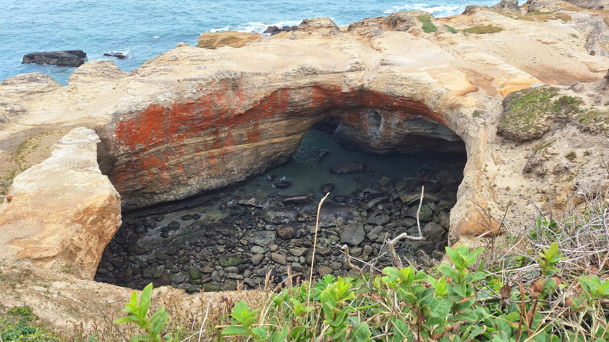
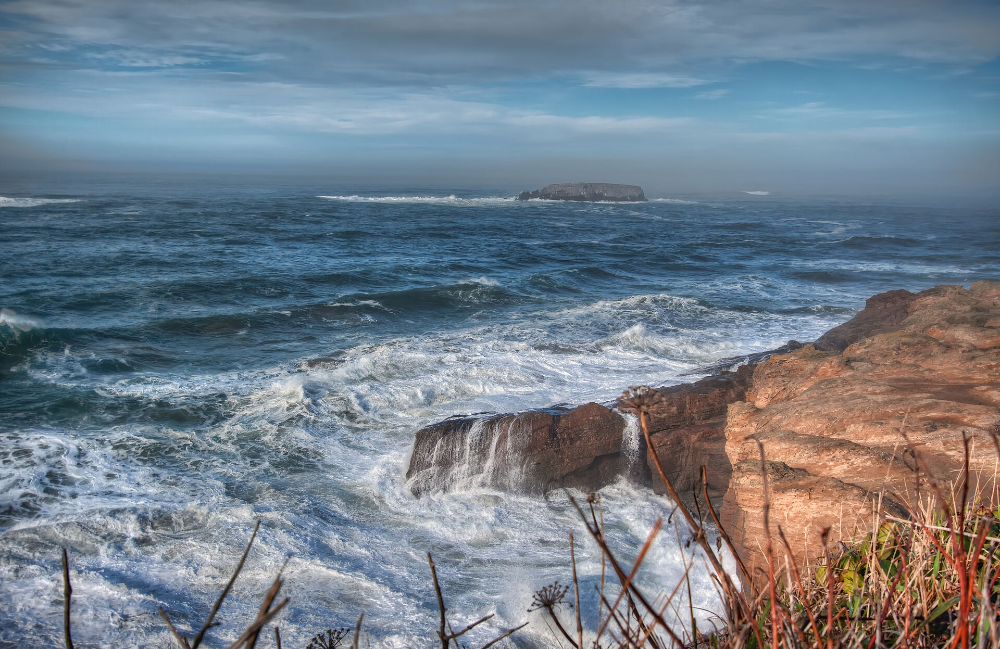
8Devils Punchbowl 大砂锅 9/6 周日🌤️ Partly Sunny·65°F·雨12%备选
🛣 12 mi · ~21 min
Otter Rock 的 Devils Punchbowl 是一处天然的巨大礁石碗，海水从洞口涌入形成漩涡，观景台护栏望下去极为震撼。北侧有小潮池。对大多数孩子很有吸引力，但海啸轰隆声很大，敏感娃站护栏后或戴耳罩。
亮点：🆓 免费 · 护栏观景安全俯瞰巨石碗 · 海水灌入的漩涡+巨浪，震撼 · 北侧潮池低潮可看海洋生物
贴士：⚠️ 海浪轰隆声大，怕响的娃站远/戴耳罩 · 节假日午后人多，尽量上午去
🗺 在 Google Maps 打开(Devils Punchbowl 大砂锅)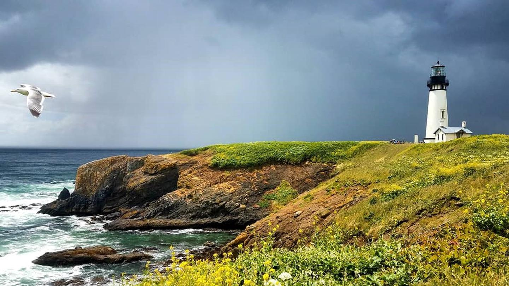
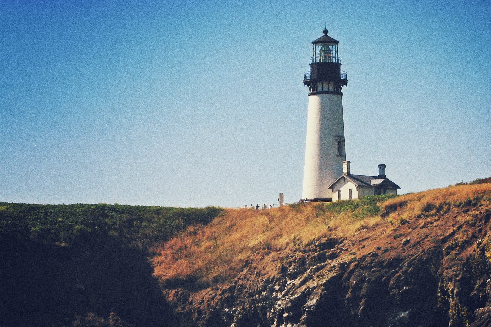
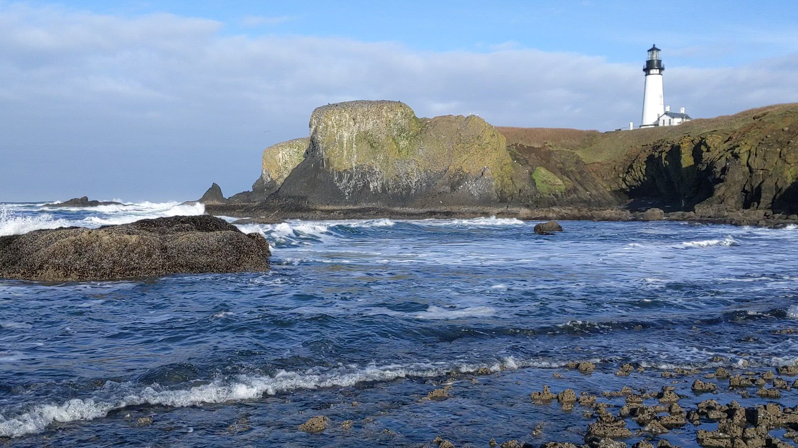
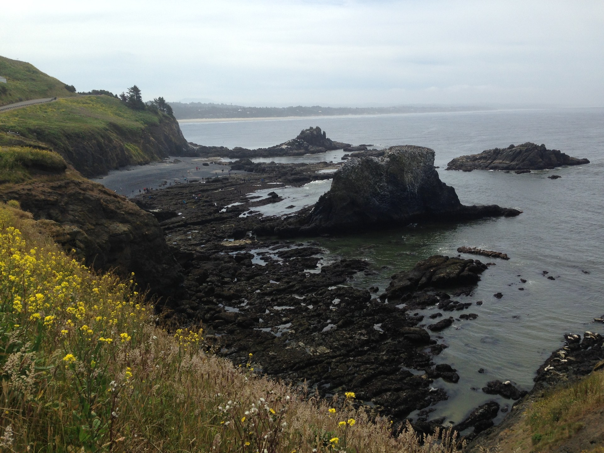
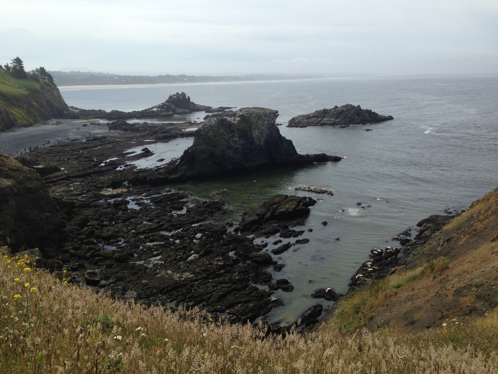
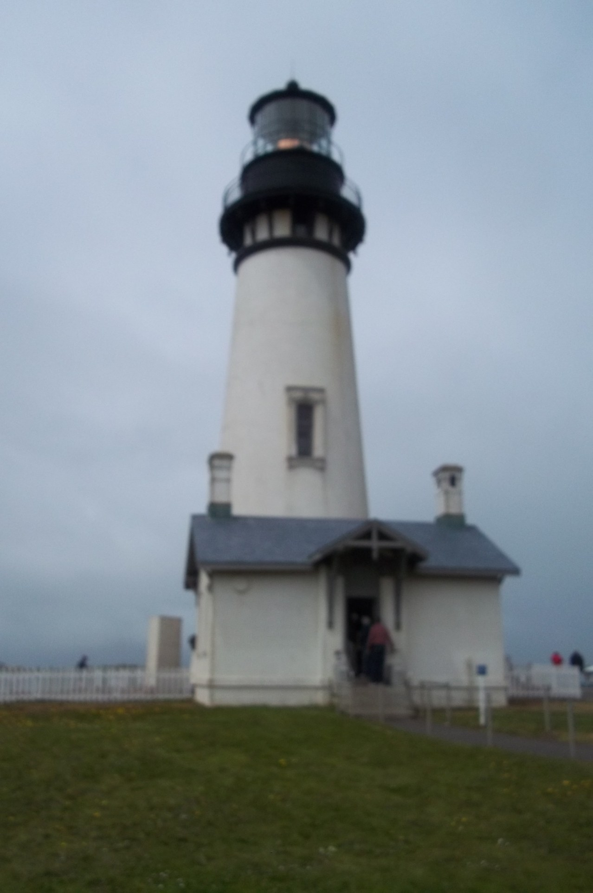
9Yaquina Head 灯塔+潮池 9/6 周日🌤️ Partly Sunny·66°F·雨13%必去
🛣 17 mi · ~29 min
Yaquina Head 杰出自然景观区。安静解说中心（室内自助）+平缓铺装步道到灯塔+低潮时代石滩潮池（海星/海胆/海葵），比 Newport 镇中心人少得多。$7/车覆盖全家。灯塔内部因整修只开放一小段。
亮点：$7/车 · 覆盖全家，性价比高 · 安静解说中心（室内无障碍）+平缓步道 · 低潮看 Cobble Beach 潮池海洋生物 · 俄州最高的灯塔之一，白色塔身经典
贴士：⚠️ 灯塔内层整修只开放一段，到解说中心确认 · 潮池需查低潮时间；海鸟繁殖季(5-9月)部分封路
🗺 在 Google Maps 打开(Yaquina Head 灯塔+潮池)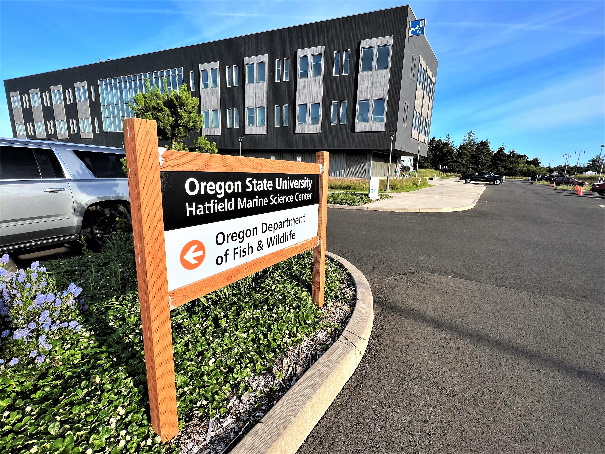
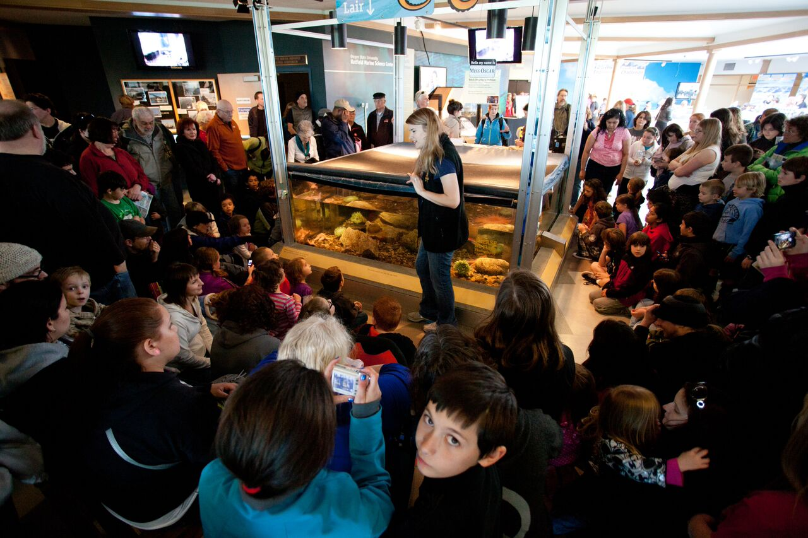
10Hatfield 海洋科学中心 9/6 周日 下午🌤️ Partly Sunny·66°F·雨13%推荐
🛣 22 mi · ~37 min
OSU 的 Hatfield 海洋科学中心——安静、紧凑、动手型：室内潮池触摸缸、70 英尺蓝鲸骨架、贝壳声音展、船模拟器、巨型章鱼。5岁以上 $5、5岁以下免费。整趟行程感官刺激最低、最平静的室内坑，Seattle 没有。
亮点：🎯 全家≈$15，超值 · 室内潮池触摸缸+蓝鲸骨架+船模拟器，动手 · 最低感官、最平静，适合敏感娃 · Seattle 没有的海洋科学中心
贴士：⚠️ 章鱼喂食表演正暂停(新章鱼适应中) · 室内全天候，雨天绝佳备份
🗺 在 Google Maps 打开(Hatfield 海洋科学中心)D4 9/7 周一
🎈 躺平 D4（回程）：上午 Glass Center 看玻璃吹制+泳池最后一泡，午饭后启程，内陆返 Bellevue 傍晚到家。
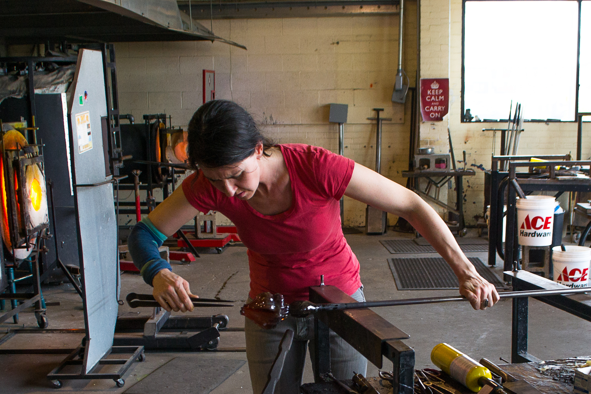
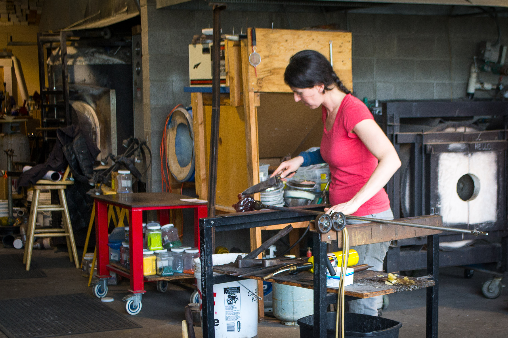
11Lincoln City Glass Center 9/7 周一 上午🌥️ 上午小雨·64°F·雨15%备选
🛣 4 mi · ~7 min
Lincoln City Glass Center（原 Jennifer Sears 玻璃艺术工作室）。小安静工作室，娃能免费看玻璃吹制（烧软玻璃在火里成形，像魔术）；自己吹 $75-225（适合大孩子）。全室内、低噪、人流少，Labor Day 周一也开。回程北上网顺路。
亮点：🆓 免费看玻璃吹制(像魔术) · 小而安静的工作室，低噪可控 · 周一也开、回程顺路(北向)
贴士：自己吹玻璃 $75-225，更适合大孩子 · 看演示免费，买纪念品另计
🗺 在 Google Maps 打开(Lincoln City Glass Center)12返回 Bellevue 9/7 周一 傍晚到家🌤️ 11点转晴·64°F·雨7%回程
🛣 287 mi · ≈4.5–5h(含停靠)
逛完玻璃中心，取道 US-101 北上 Lincoln City，转 HWY-18 东向内陆，接 I-5 北上，I-205 绕过波特兰中心回 Bellevue，傍晚到家。
亮点：上午 Glass Center+泳池最后一泡 · 内陆 I-5/I-205 绕开波特兰中心，不下高速 · 沿途 Salem/Olympia 补给休息
贴士：下午 I-5 北上偶有拥堵，预留时间 · 给娃留 1-2 个休息站 · 到家再刷一眼 oregonsmoke 留意空气
🗺 在 Google Maps 打开(返回 Bellevue)🐋 Backup · Dockside 观鲸船（择一日做第二体验）如果想让娃多一个'最特别体验'，Dockside Charters 大船($30/成人,$15/儿童,每天1-2h)是南边最值得的。50ft 海岸警卫认证大船、舱内可看鲸换气，对敏感娃友好。9月定居灰鲸旺季(每天5-15头)。须预约、看天气开船。⚠️ 观鲸中心 8/1-10/31 整修关闭，只能坐船。与沙板二选一。
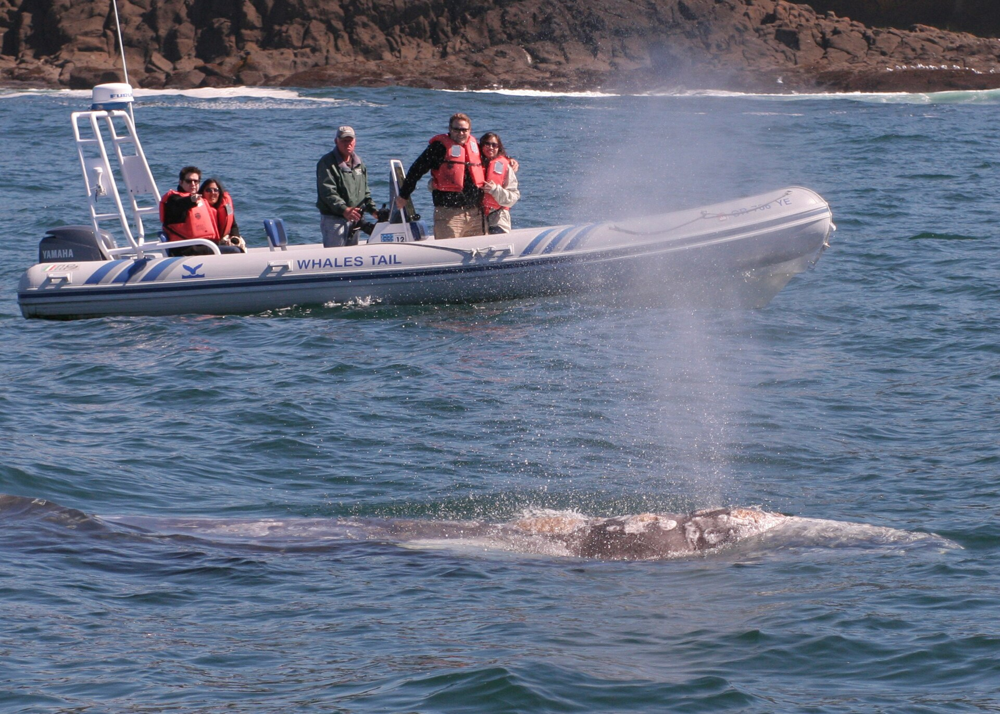
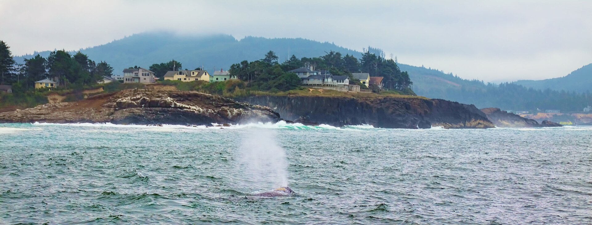
🍽 去哪儿吃（已核实 · 诚实标注）
俄州海岸小城，不是美食之都——但海鲜/寿司/墨西哥是真强项。诚实提醒：① 近 Lincoln City 没有韩餐（唯一真韩餐 Seoul K-Food 在 Depoe Bay ~11min）；② 中餐只有美式中餐(Momiji/Foon Hing Yuen，常规)；③ 意餐无经典(柴火披萨 Hearth & Table 最接近)。周五晚 The Attic(酒店内) 或房内送餐最省心，周六 Kyllo's 大餐，周日晚选 Side Door 或房内。
Kyllo's Seafood & Grill 本地海鲜·必吃 🥇 晚饭首选
俄州海岸招牌海鲜晚餐：餐厅架在沙滩上的高脚屋，窗外海景。Dungeness 蟹+获奖浓汤+椒盐比目鱼。约 $25-40/人。
Side Door Cafe / Eden Hall 海鲜·蟹饼 🤫 最安静
离 Salishan 最近的黑马(0.5 mi,Gleneden)，本地小馆+葡萄酒廊(Eden Hall)。本地垂钓鱼+蟹饼+虾沙拉。4.6★。
Yatai Sushi 日本·寿司 🍣 日本菜
本地公认'整个州最好吃寿司'(4.5★)，韩国夫妇经营，自家泡菜超赞。小no-frills 邻里店，售完打烊。约 $15-28。
La Roca 墨西哥·Oaxacan 🌮 墨西哥菜
最有特色墨餐：真正 Oaxacan（手作 mole、现炸薯片、house 沙司），Nelscott 历史街区。4.3★ 本地人爱。约 $12-22。
Seoul K-Food (Depoe Bay) 韩餐 🇰🇷 韩餐(唯一)
⚠️ 近Lincoln City 无韩餐，唯一真韩餐在这(4.7★)——bulgogi/bibimbap/kimchi 炖。就在 101 边，去/回顺路。约 $14-22。
Hearth & Table 意式·柴火披萨 🍕 意式
Lincoln City 最接近'精致晚餐'：小柴火房+季节菜+好鸡尾酒。只开周三六(晚餐)4晚。约 $18-30。
Otis Cafe 早餐·招牌糍粑 🥪 早餐
俄州海岸经典早餐：手剥糍粑、德式土豆、biscuits & gravy，厨房失火后迁址重开仍是地标。约 $15。
Eleanor's Undertow 甜品·老冰店 🍨 甜品必吃
Lincoln City 传奇冰品汽水泉(1981年起)，自制碎屑 a-la-mode 超有名，Taft 区复古吧台。
Depoe Baykery 烘焙 🥐 就在酒店旁
必试俄州海岸烘焙：超大的 pecan-caramel 卷、新鲜面包、甜甜圈——已搬到 Salishan 旁 plaza，几乎在酒店。
The Pines Dine 小吃车村 🍽 各取所需
Lincoln City 小吃车天堂：10-13 辆不同车(taco/寿司/汉堡/希腊/波多黎各)围绕一个室内吧台，全家各选各的。
Mo's Seafood (Newport·original) 海鲜·浓汤发源地 🔔 经典打卡
1946 年 Newport 原店，Oregon 名汤 Mo's clam chowder 诞生地，配俄州粉虾。iconic 必打卡。约 $14-16。
Chowder Bowl @ Nye Beach 海鲜·浓汤 🍲 安静浓汤
本地人票选'俄州海岸最佳浓汤'(4.3★)，neighborhood-cafe 氛围比湾头安静，适合敏感娃。约 $15-20。